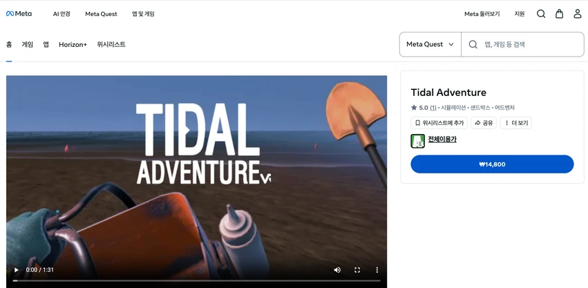

XR development · Internship
Tidal Adventure
Helping players find their way across the tidal flats
At Overay, I worked on how creatures respond when players point at them, how players find newly opened areas, and how creatures move around obstacles.

Showing which creature the controller is pointing at
Players explore the tidal flats and collect creatures. I traced references across scenes, prefabs, and scripts in the existing Unity project to find where selection events and controller vibrations were triggered. I added a highlight to the creature under the pointer and made its color change according to the size criterion, so players could see its status before collecting it.
Finding the next area with a wrist compass
I made the wrist compass point toward a newly opened area and stop guiding the player once they arrived. I also updated the progression logic to use the number of areas and their opening times. Previously, each rule referred to a hard-coded area number.
Testing a full run on the headset
Creatures used to turn abruptly after hitting an obstacle. I added forward collision detection, acceleration, and deceleration so they could adjust their movement earlier. On an XR headset, I repeatedly tested the full sequence from selecting a creature to collecting it and following the compass. I shared these changes through Git branches and code review and helped prepare the release.